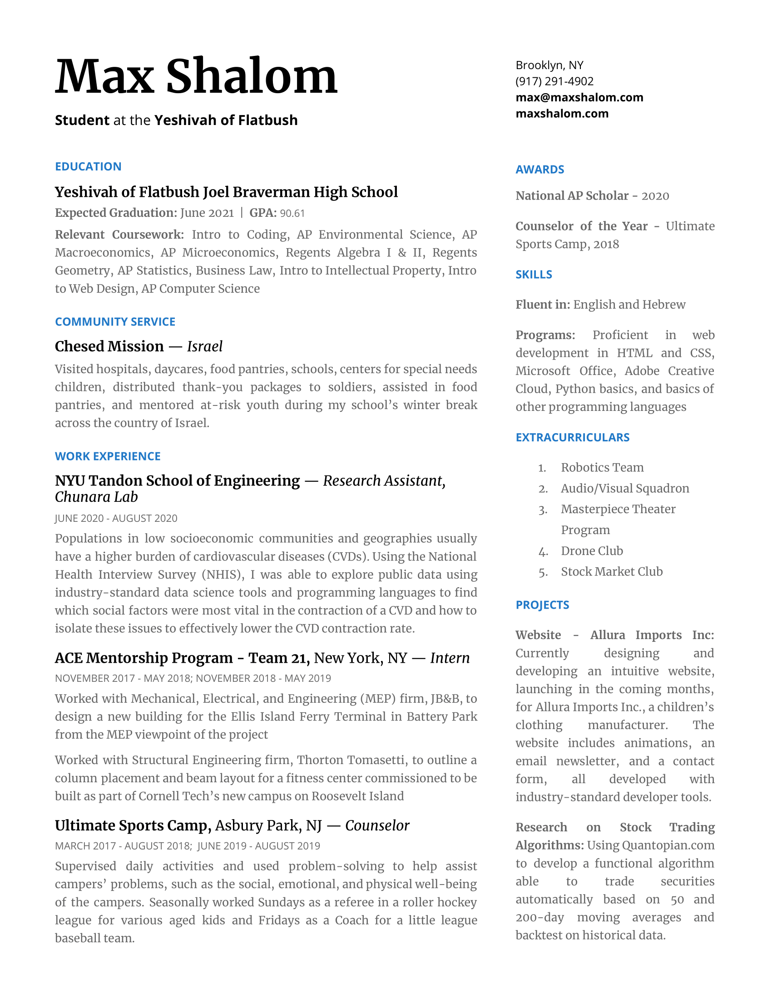

Download resume
As of November 8, 2020:
PDF
My name is Max Shalom. I am in 12th grade at the Yeshivah of Flatbush High School. One of my passions is technology and programming, and so, I thought the best way to present my memoir was to build a website. This website was wholly developed and designed by me, using industry-standard devlopment tools and languages, including HTML, CSS, JavaScript, and GitHub Hosting. Building websites was one of the first things I learned to do in my STEM endeavors, and is still a helpful skill I use often. While it may not looks as nice as one generated by a webite builder (becuase I am still learning more techniques), I take pride in saying its my own work. I feel by virtue of everything I take part in, a big factor in my life is living it to the fullest extent. I am using my name (Max) as a pun for the word "maximum," thereby saying, to live your best life.
1609 Avenue J
Brooklyn, NY 11230
September 25, 2020
Dear Mr. Cook,
I am writing to express my interest in your posted opening for a new Software Engineering and Data Science Intern. I am looking for an opportunity to apply my skills and abilities to a challenging, growth-oriented position with a leading company like Apple while continuing to build my academic foundation.
My previous experiences have supported the development of my data analysis and programming abilities. I am excited about the possibility of learning from and contributing to your team by applying my motivation, communication, and leadership skills.
My focus, as an emerging professional, is to utilize my skills in Data Science, making a positive impact on the overall organization. I enjoy collecting, organizing, and analyzing data, working in groups, and brainstorming project strategies. I believe these skills will be valuable in the Data Science Intern role while continuing to enhance the excellent reputation of Apple.
I'd be happy to provide greater detail about my skills and experience during an interview. Please call me at your earliest convenience.
Looking forward to hearing from you.
Sincerely,
Download resume
As of November 8, 2020:
PDF
During the budget period, I spent $408 on an income of $120. This is higher than what I expected but I am not surprised as I understood my purchases and how I got there. My biggest expense was $260 to pay my share in a trip being planned with some friends to go to Florida next year using the money we made during the summer. Besides this unusual expense, my biggest expenses were mostly on my daily lunch. I underestimated how quickly my smaller purchases added up to become a large portion of my money spent. Another large expense that had a large impact on my budget was my SAT registration fee ($52). This, as well, is a rare expense but is an important investment to my development as a student and for my future. I also spent a decent amount on recreational activities such as going to the movies ($22) but I think this was worth it because its important to have fun. In addition, I had other small purchases such as getting breakfast once in a while in school and healthcare costs that didn’t have the biggest impacts on my full week spending. From now on, I’d like to watch more carefully what I spend and watch my small purchases because I know they wil amount to much bigger percentages of spending after a while. I have to not just get another drink or candy because its only another $3 because every time I do that, It can amount to extra $10s a month.
Full spreadsheet
See the full spreadsheet and daily transaction breakdown:
As of November 8, 2020
Google Sheets
When I first wrote this assignment, I truly enjoyed it because it helped me realize all the amazing oppurtunities I was able to complete during my tenure in high school. From ACE, to Robotics, to AV, to Architechture, I did much more than the average student and am very proud of it. Looking back at these activities, I realized a common factor they shared - perspectives. I undestood that every activity that I did enabled me to see a certain interest of mine from an unorthodox point-of-view. In some cases, I recognized what went into the backend of certain things. In others, I simply gained a new appreciation for what went into producing them. Overall, I appreciated doing this project last year becuase of its effect on me and my perspective on life. I wrote how important it is to look up from what you're doing to admire your surroundings and that is still true as it always will be.
This I Believe
As of February 20, 2020
PDF
On my 16th birthday, when I got home from school, my parents gifted me with my own room. I was astounded and love how personal it is to me. When you walk, straight ahead, on the wall, is my desk. It contains many of my personal belongings that are meaningful and significant to me and is the place where I spend most of my time at home. Above my desk on the wall, are pictures of myself as a young adolescent with many of my family members and cousins taken by my grandma with her film camera and developed in her own darkroom at home. I think its really cool how she does this and some of the pictures I developed with her when she had taught me how to do it. On the opposite wall of my desk is my bed. My bed is low to the ground and encased in a dark grey wood unit. In this unit, there is an enclosed shelf at the same level as the bed touching the corner of the room. Here I have many pictures of myself with family and friends, including a sentimental picture of myself at 7 years old with my late great grandmother. I also keep some books I’m reading, some photo albums, and some art projects I made such as a painted piggy bank I made a while back. My bed is pretty great as well and has extremely comfortable sheets. I enjoy simply sitting on it and feel its warmth and comfort every time I enter my room. To the right of my bed, I have a chair with a blanket on top. I really enjoy sitting on it and thinking about my day, or my problems and solutions to them. Behind that on the wall opposite the other end of my bed is my closet. I do not enjoy opening it because I don't enjoy pondering what to where every day because I want to look good in school to impress everyone but hate the hassle of choosing clothes. My bedroom is very important to me and every area of it has some significance to me. It's what makes my room, my room.
A personal symbol very important to me is my Kuracha. This is because when I was 10 years old, I went with my grandmother to pick out its design at the needlepoint store. Together we chose a colorful design that was playful yet mature and it is the most important thing I own. In the 2+ years following, my grandmother put in days worth of hard work stitching the bag in immaculate needlepoint designs using a variety of different fabrics, materials, and stitching patterns. It is a simple design with thick lines going across and turning, in many different colors. In the center, is my Hebrew name, in a fuzzy, orange, fabric. From the time we decided on it, until my Bar Mitzvah, I had only seen it a few times, but on my bar mitzvah when she had finally given it to me, I was astonished. I truly appreciate her work and I think about her every time I open it. Since then, I have never missed a day of Teffilin and plan to keep it this way. My father has instilled in me the value of religion and that forgetting my Kuracha is like forgetting my right hand. Whenever we travel he makes sure that I have it and I don’t let it out of my sight. I never even pack it in my suitcase and make sure it is always by my side. I understand how expensive and time-consuming it is to make it and tell my grandmother every time she sees me how much I love it and she so so rightfully proud of her work. My Kuracha for me is a symbol of religion and devotion to Hashem and a thoughtful gift from my Grandmother.
I feel this quote is representative of me because it is a quote by which I live my life. By keeping a cool head, it’s very easy to sort out all of your problems and not become stressed. It’s in this way, I manage my high school workload, a plethora of extracurriculars, and independent studies. It is important to stay this way all day and I believe a big part of my personality staying chill. People then feel confident to approach me for help and I enjoy helping others. They know I will be helpful, keep their trust and confidentiality, and treat them with respect.
It's in this way, I "Live Life to the Max."

At this stage in my life, there are a few things that are of vast importance to me. First off, my friends and family. I am constantly hanging out with my friends and enjoy it very much. I am able to do this because all my friends and I go to the same school and live in the same circles. While I hope we will all still be close, I wonder if it will still be the same in 20 years. We will all have gone to college, not together, and some might dorm, then hopefully, get good jobs. I hope that myself and all who want to will have started a family and settled down. While now my friends might be the most important to me, I know that as time progresses, my priorities will shift. I may feel responsible for my brothers and parents now, but maybe in 20 years, my obligation will be to my wife and children. Also now, school is what takes up most of my life. I truly don’t mind going to school because I get to see my friends and we have a good time. I know that I will miss it when it’s over and I already don’t understand how three grades pass by so quickly. While I obsess over grades now and work hard in my studies, will it matter in 20 years the 78 I got on my chemistry regent? Probably not. But, I enjoy the adolescent lack of responsibility and the fact that I don’t have to make enough money to support my family. I don’t look forward to having that. Right now, I have the ability to fill my time aimlessly by watching TV. In 20 years, I may not. I believe that I have to appreciate what I have now and make the best out of it however, there is a lot to look forward to in the next 20 years.
When I graduated from elementary school, my dad proposed the trip of a lifetime. Just my dad and I would spend a few days traveling to celebrate my accomplishments. With the input and approval of my dad, I planned the trip including flights, hotels, and activities. We would first go to Portland, OR to tour some city sights and travel to a nearby state park to see beautiful waterfalls and hike. The next day, even though it was in late June, we drove an hour away to Mt. Hood to ski. At the high altitudes of over 8,000 feet, it was cold enough for the snow not to melt. My dad’s encouragement enabled be to ski black-diamond slopes with moguls (bumps of ice) scattered throughout the trail. We visited an engineering museum that was very interesting and Powell's City of Books, the largest independent new and used bookstore in the world - a full city block. I sat for a couple hours checking out the rare book room and readin the beginnings of many different book in various genres. The next day we flew into Calgary, CA airport, about an hour away from Portland by plane. After driving for about 2 hours, we arrived at our destination: Banff, Alberta, Canada, a beautiful, picturesque tourist town situated at the base of the Canadian mountains of Banff National Park. Over the next two days, we had an amazing time hiking, white water rafting, and touring the city. On the last day, we took a gondola lift to the top of a mountain. From there, I was able to see for miles of beautiful rivers, lakes, trees, and mountainscapes, and learn about the history of the land at a learning center locatedat the top of the mountain, thousands of feet up. After that, we headed back to the airport and I was so sad we had to pick up to head home.
If I could relive anything, It would be this trip because of how much I enjoyed it. In addition, traveling just us two made me feel more mature and capable of doing anything. I simply want to experience the trip again because of the fun I had and wish I could go back.